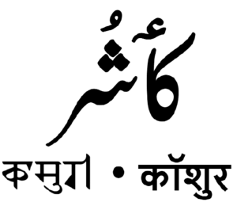
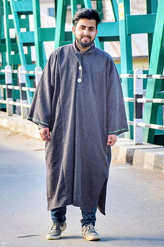
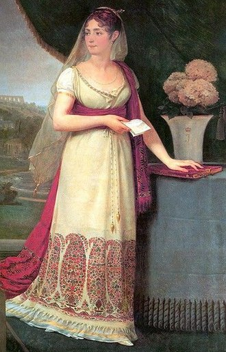
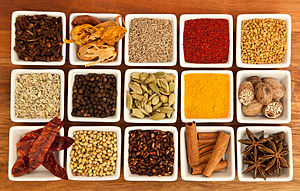

Explore the culture of "Paradise on Earth".
Diverse traditions, art, music, and stunning landscapes shape Jammu and Kashmir's culture.
The Kashmiri Language

Kashmiris primarily speak the Kashmiri language, a Dardic language belonging to the Indo-Aryan language family.
Kashmiri Wear

Kashmiris traditionally wear clothing suited for the cold climate, including pherans (long loose gowns), shawls, and traditional headwear.
Kashmiri Cuisine

Kashmiri cuisine features aromatic flavors and rich dishes, often highlighting ingredients like saffron, dried fruits, and unique spices.